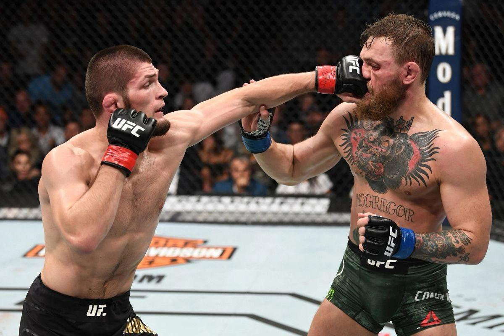
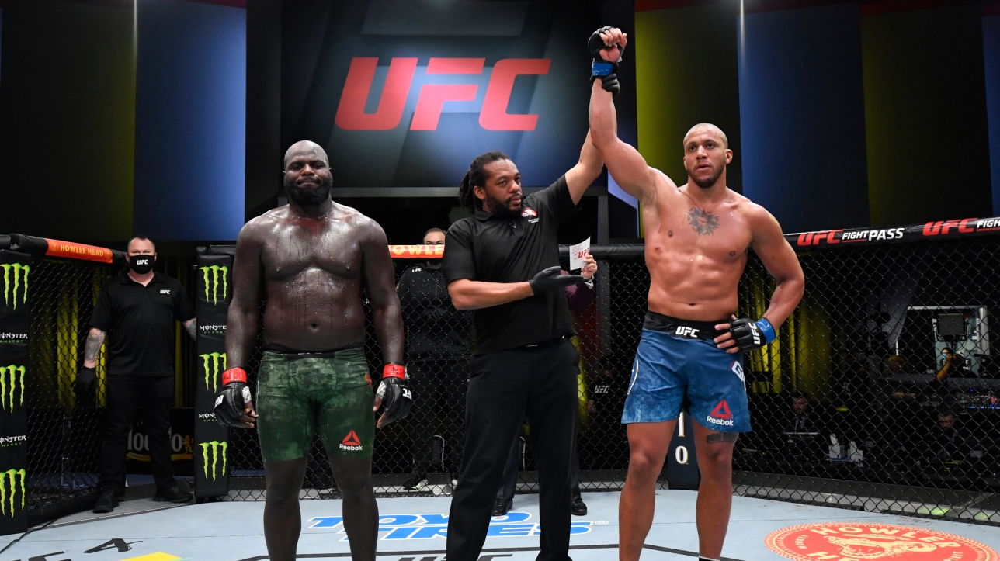

Les Arts Martiaux Mixtes (MMA)
Les arts martiaux mixtes, souvent désignés par le sigle anglais MMA pour mixed
martial arts,
anciennement appelés combat libre ou free-fight, sont un sport de combat de percussion-préhension,
combinant les techniques de percussion telles que coups de pied, de poing, de genou et de coude,
mais aussi les techniques de préhension en corps à corps, de projections et de soumission ainsi que
les techniques particulières de percussion au sol.
Bien qu'issu d'une longue tradition de sports de combat peu régulés qui remonte notamment à la
pratique du pancrace dans l'Antiquité, ce sport n'a commencé à uniformiser mondialement ses codes
qu'à partir des années 19902. Néanmoins, ce sport continue à être interdit en compétition dans
certains pays, en raison de sa dangerosité.
Sous la dénomination de « mixed martial arts », plusieurs disciplines sont généralement regroupées, les appellations variant selon les points de vue et les périodes : les mixed martial arts, dits « MMA » (littéralement « arts martiaux mixtes), terme anglais pour désigner des rencontres interdisciplinaires qui ne sont applicables qu'en combat libre (par exemple un boxeur peut affronter un lutteur dans le cadre du MMA). Ce terme prend tout son sens depuis que les combattants ont compris l'importance de s'entraîner aux nombreux sports qui permettent d'appréhender certaines phases des combats (cross training). Aujourd'hui, ce terme permet de définir ce nouveau sport de combat à part entière, aux influences multiples ; le free-fight, faux anglicisme désignant le « combat libre » ; le vale tudo, appellation portugaise qui se traduit par « tout se vaut », « tout est permis », l'ancêtre du combat libre moderne ; le no holds barred, dit « NHB », terme qui ne convient qu'aux affrontements ayant très peu de règles, à l'image des tournois de type vale tudo comme l'International Vale Tudo Championships et des premiers événements de l'Ultimate Fighting Championship ; le pancrace.
Sous la dénomination de « mixed martial arts », plusieurs disciplines sont généralement regroupées, les appellations variant selon les points de vue et les périodes : les mixed martial arts, dits « MMA » (littéralement « arts martiaux mixtes), terme anglais pour désigner des rencontres interdisciplinaires qui ne sont applicables qu'en combat libre (par exemple un boxeur peut affronter un lutteur dans le cadre du MMA). Ce terme prend tout son sens depuis que les combattants ont compris l'importance de s'entraîner aux nombreux sports qui permettent d'appréhender certaines phases des combats (cross training). Aujourd'hui, ce terme permet de définir ce nouveau sport de combat à part entière, aux influences multiples ; le free-fight, faux anglicisme désignant le « combat libre » ; le vale tudo, appellation portugaise qui se traduit par « tout se vaut », « tout est permis », l'ancêtre du combat libre moderne ; le no holds barred, dit « NHB », terme qui ne convient qu'aux affrontements ayant très peu de règles, à l'image des tournois de type vale tudo comme l'International Vale Tudo Championships et des premiers événements de l'Ultimate Fighting Championship ; le pancrace.

Les façons de remporter un combat
- Avant la limite
- Knockout (KO) – Un adversaire est complètement ou pratiquement inconscient à la suite de frappes et le combat est arrêté car la personne se trouve dans un état où elle est complètement incapable de se défendre.
- KO technique (TKO) – Un KO technique est une situation où un combattant est dans l’incapacité technique de poursuivre normalement le combat. Beaucoup de situations peuvent mener a un TKO. L’une d’entre elles est l’arrêt par l’arbitre. Lorsqu’un combattant reçoit trop de coups et qu’il n’arrive plus à se défendre, l’arbitre intervient pour arrêter le combat, afin de préserver la santé du combattant, dans le cas contraire les coups pourraient l’amener au KO complet
- Soumission – Situation où un combattant est physiquement forcé d’abandonner. Pour cela, il signale son abandon en tapant à plusieurs reprises de la main sur son adversaire. Ce peut être à la suite d'une clé articulaire ou un étranglement exercé sur lui. Un combattant peut aussi signaler verbalement à l’arbitre son désir d’arrêter le combat.
- Soumission technique – Est déclaré soumission technique lorsque l’arbitre décide de mettre fin au combat lorsqu’il considère que le combattant qui subit la soumission est trop engagé et que l’articulation, le muscle, ou que le combattant va s’évanouir, alors même que celui-ci n’a pas signalé son abandon.
- Disqualification – Lorsqu’un combattant viole délibérément une règle de l’organisation en portant, par exemple, un coup interdit incluant soccer-kicks (coups de pied portés à la tête lorsque l'adversaire est au sol), ou stomps (frappe en marteau) à l’UFC mène à une disqualification.
- Décision technique (unanime ou partagée) – Lorsque par exemple un combattant est dans l’incapacité de continuer le combat à la suite d'un accident arrivé involontairement. Les juges choisissent alors un vainqueur. Par exemple un combattant s’ouvre la tête en tombant du ring, les docteurs l’empêchent de continuer le combat, le combat est donc arrêté comme s'il avait atteint la limite de temps et les juges donnent leur décision.
- Égalité technique (unanime ou partagée) – Même situation, mais l'égalité est déclaré.
- Sans décision ou no-contest (NC) – Coupure non intentionnelle due à un coup irrégulier ou test positif aux produits illicites à l'issue d'une victoire, ou demande d’annulation de décision par un combattant qui considère que l’arrêt du combat a été prématuré, etc.
- Sur décision
- Décision unanime – Les 3 juges donnent le même avis.
- Décision à la majorité (ou décision majoritaire) – 2 juges sont du même avis, 1 donne égalité.
- Décision partagée – 2 juges sont du même avis, 1 de l’avis contraire.
- Égalité unanime - 3 juges donnent l'égalité.
- Égalité partagée - 1 juge donne la victoire pour un combattant, 1 autre la défaite à ce même combattant, et le dernier l'égalité.
- Égalité à la majorité (ou égalité majoritaire) - 2 juges donnent l'égalité, le troisième une victoire à l’un des 2 combattants.